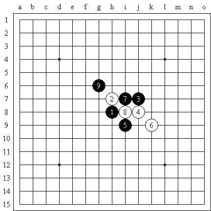
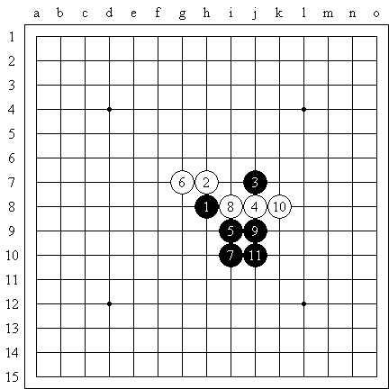
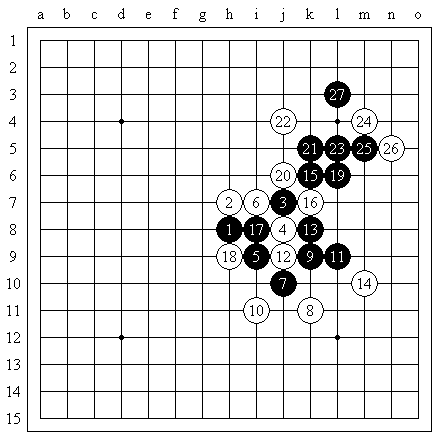
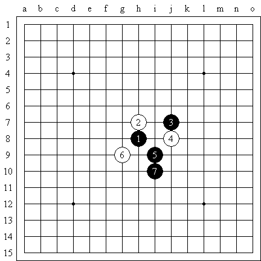
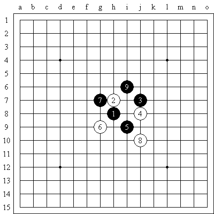
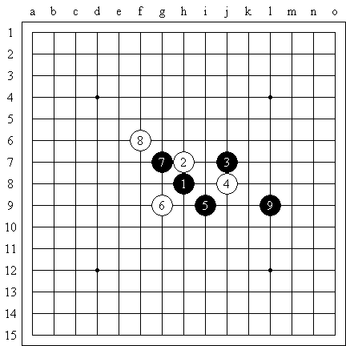

简明残月讲座
#1 简明残月讲座 作者：江南新绿 发表时间：2009-2-14 12:30:48

白6弱手，黑9简明。白棋无反抗。黑棋容易追胜。
#2 Re:简明残月讲座 作者：江南新绿 发表时间：2009-2-14 12:37:51

不需要纠缠在一起就可以获胜是这个走法的秘诀。
#3 Re:Re:简明残月讲座 作者：江南新绿 发表时间：2009-2-14 12:40:50

注意黑棋的运动轨迹，以及21单做一手控制的手法是此图的关键。
#4 Re:Re:Re:简明残月讲座 作者：江南新绿 发表时间：2009-2-14 12:43:46



当白棋做出包围之态的情况下，鱼死网破和迅速逃跑都是可以选择的办法。
#5 Re:简明残月讲座 作者：小丸.net 发表时间：2009-2-14 14:09:46
早也盼，晚也盼，总算等到了杨老师的残月教程啦~~~~
#6 Re:简明残月讲座 作者：茗弈小刀 发表时间：2009-2-14 15:52:47
谢谢新绿老师的讲解！祝老师情人节快乐！#7 Re:Re:简明残月讲座 作者：江南新绿 发表时间：2009-2-16 0:05:22
=======上图对应的爱五子棋谱代码如下，以便你拆解：========
h8h9j9g8f7g7g6i6
======================================================
今天简单的看了下这个变化，谢谢失落缘坚定的告诉我这个是必败的变化。感觉和下图的变化有些类似，不会简单几步就必胜。：）
=======上图对应的爱五子棋谱代码如下，以便你拆解：========
h8h9j9g8f7g7g6h5
======================================================
#8 Re:简明残月讲座 作者：董明 发表时间：2011-11-4 23:42:28
#9 Re:简明残月讲座 作者：屏蔽 发表时间：2011-11-5 9:46:36
I7［ 董明 于 2011-11-26 22:54:18 时花20金币送鲜花一朵］